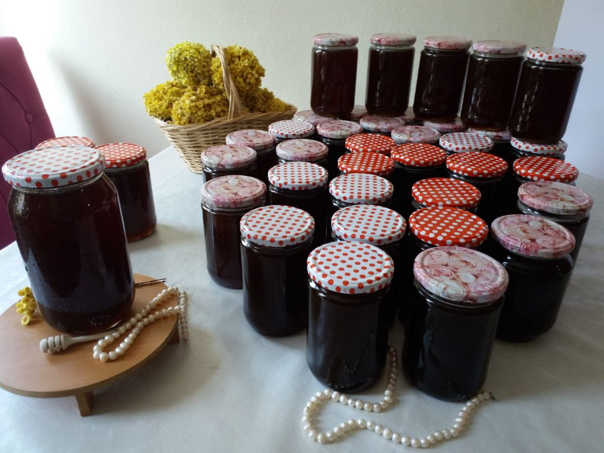
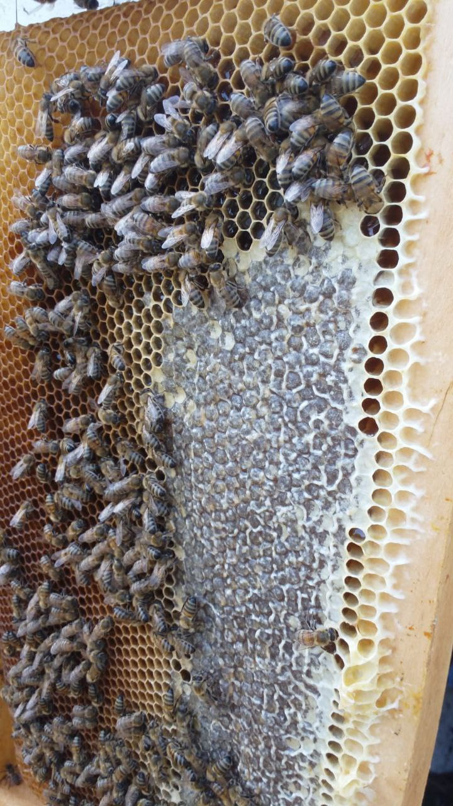
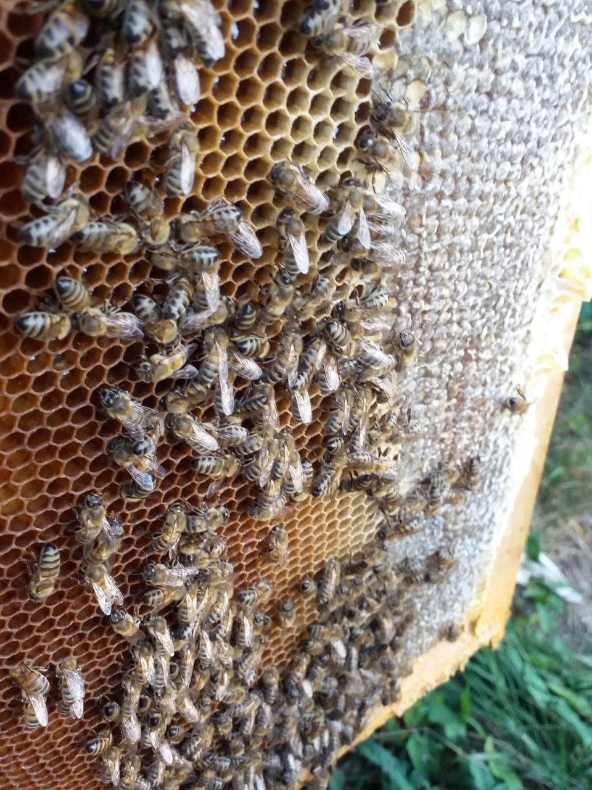
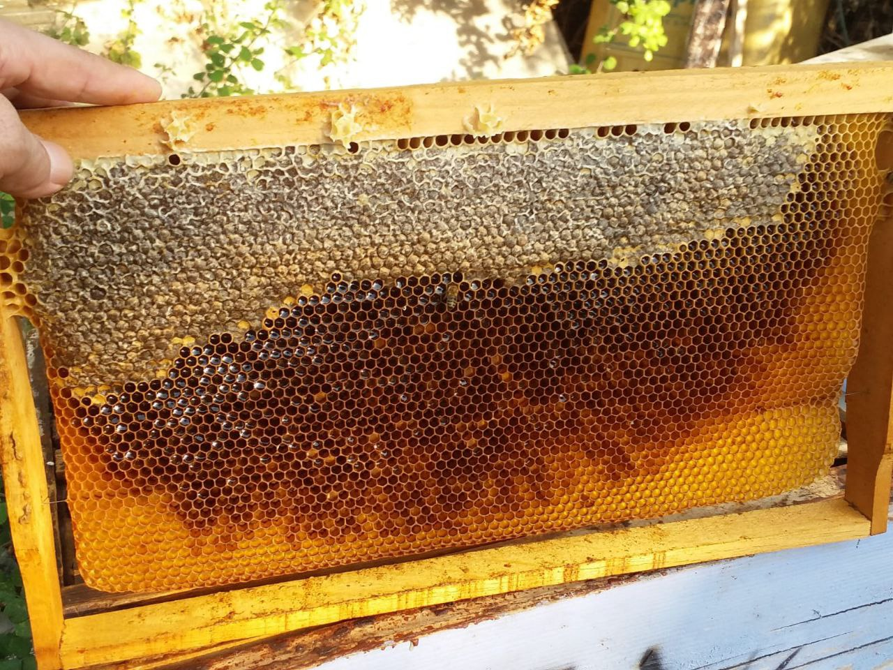
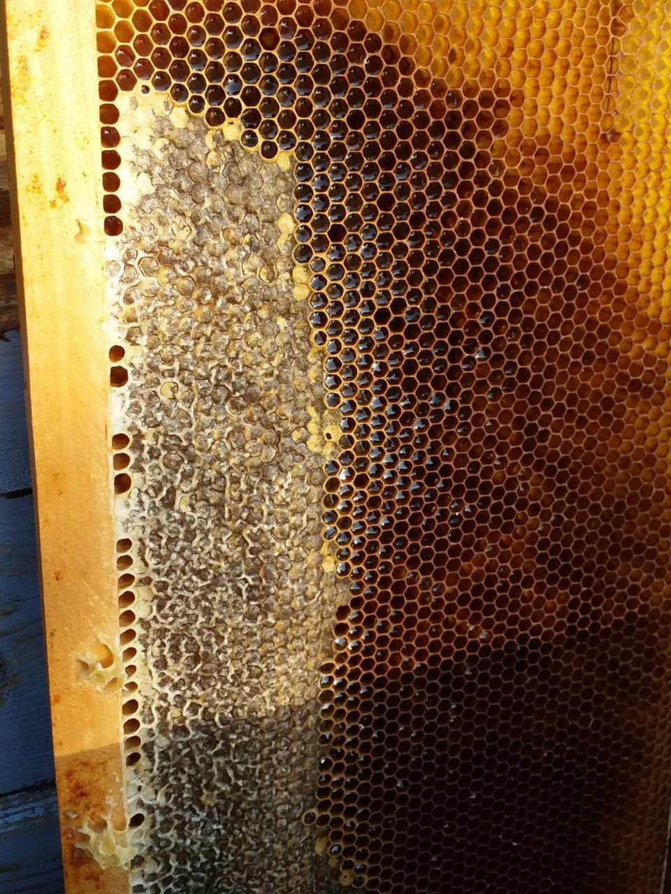
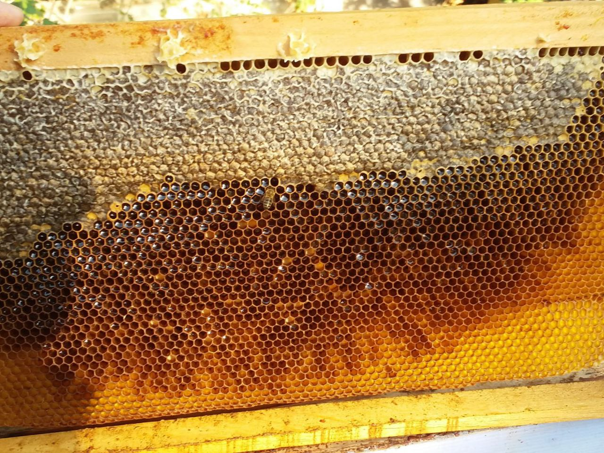
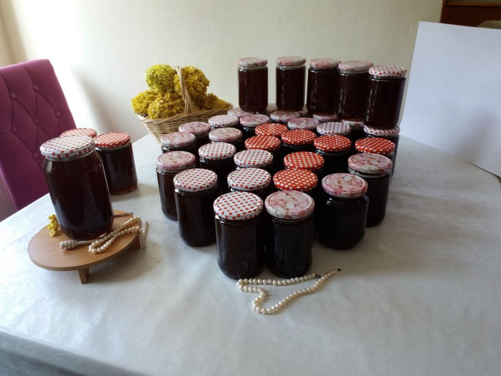
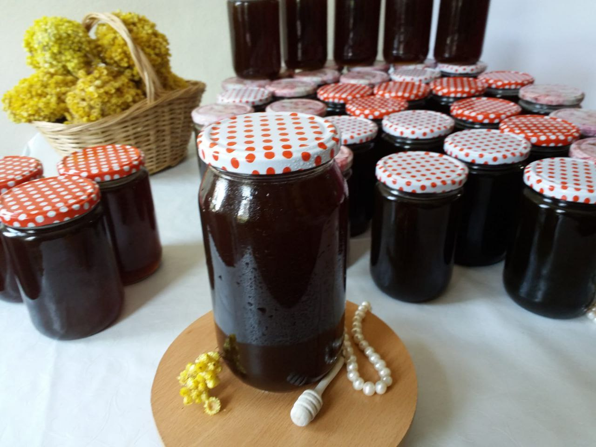

Bal, arıların çiçeklerden topladığı nektarın arıların sindirim sisteminde kimyasal değişime uğraması sonucu oluşan tatlı, yapışkan bir üründür. Doğal olarak şeker, su, vitaminler, mineraller ve antioksidanlar içerir. Bal, tarih boyunca besin, şifa kaynağı ve tatlandırıcı olarak kullanılmıştır.

Arıcılık, arıların bal, polen, propolis ve arı sütü gibi ürünlerini elde etmek amacıyla yapılan bir tarım faaliyetidir. Arıcılar, bal üretim sürecini yönetir, arıların sağlığını korur ve onları verimli hale getirmek için çeşitli teknikler kullanır.

Arılar, kraliçe arı tarafından yumurtlanan yumurtalardan gelişir. Bu yumurtalar, larva evresine geçmeden önce belirli bir süre petek hücrelerinde beslenir. Farklı besinlerle (özellikle arı sütü) beslenen larvalar, kraliçe arı, işçi arı veya erkek arı (dron) olarak gelişir.

Bal, tarih boyunca çok değerli bir ürün olmuştur. Antik Mısırlılar, Yunanlılar ve Romalılar balı hem besin hem de ilaç olarak kullanmışlardır. Mısırlılar, balı mumyalama işlemlerinde de kullanmışlardır. Bal, zamanla geleneksel tıpta önemli bir yer edinmiş ve halk arasında doğal şifa kaynağı olarak bilinmiştir.

Bal, güçlü bir antioksidan kaynağıdır, bağışıklık sistemini güçlendirir, sindirim sistemini rahatlatır ve cilt sağlığını iyileştirir. Ayrıca bal, yaraların iyileşmesine yardımcı olur ve enerji verir. Düzenli olarak tüketildiğinde kalp sağlığını destekler ve kolesterolü dengeler.

Polen, çiçekli bitkilerin erkek üreme hücreleri olup, çiçeklerin tozlaşmasına yardımcı olur. Arılar, bu poleni toplayıp kovana taşır. Polenin zengin bir vitamin, mineral ve protein kaynağı olduğu bilinir. Ayrıca, polen, enerji verir, bağışıklık sistemini güçlendirir ve alerjik reaksiyonları azaltmaya yardımcı olabilir.

Propolis, arıların bitkilerden topladığı reçineli maddelerdir. Arılar, propolisi kovandaki çatlakları kapatmak, petekleri dezenfekte etmek ve yabancı mikroorganizmalardan korunmak için kullanır. Propolis, antioksidan özelliklere sahiptir ve bağışıklık sistemini güçlendirir.

Bal, polen ve propolis gibi arı ürünleri, bağışıklık sistemini güçlendirmek için etkili doğal kaynaklardır. Düzenli olarak bu ürünlerin tüketilmesi vücutta antioksidan seviyesini artırır, mikroplara karşı direnç oluşturur ve enfeksiyonlara karşı koruma sağlar. Ayrıca, arı ürünlerinin düzenli kullanımı, vücudu güçlendirir ve hastalıklara karşı daha dayanıklı hale getirir.
Bal, arıların çiçeklerden topladığı nektarın...
Adres: Belgrad Ormanları/İstanbul
Telefon: 05394883087
E-posta: muallimcoskun@gmail.com
Firma: Katip Balları